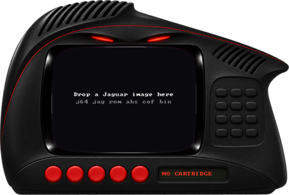

FIVE PROCESSORS IN ONE BOX AND EVERY ONE OF THEM IN V
The Jaguar is a pile of processors sharing one bus and fighting over it. vjag emulates every one of them in V:
+--------------------------------------------------------------+ | MAIN RAM (2 MB DRAM) | +-------+-----------------+--------------------+---------------+ | | | +-------+------+ +------+--------------------+------+ +----------+ | MOTOROLA | | TOM | | JERRY | | 68000 | | +-------+ +-----------+ | | +-----+ | | | | | GPU | | OBJECT | | | | DSP | | | "mostly gets | | | RISC | | PROCESSOR | | | | RISC| | | out of the | | +-------+ +-----------+ | | +-----+ | | way" | | +---------+ +--------+ | | timers | | | | | BLITTER | | video | | | audio | +--------------+ | +---------+ | timing | | | pad | | +--------+ | | wavetbl | +---------------------------------+ +----------+ all on one timeline: ticks of the 26.59 MHz master clock
| CHIP | WHAT IT DOES | IN VJAG |
|---|---|---|
| 68000 | The general. Runs the game's rules and boots everything else. | Counts cycles correctly. Matches every one of 317,500 test vectors on registers, memory, cycle count and bus order. |
| GPU (in TOM) | A 32-bit RISC with its own local RAM. Draws, transforms, computes fractals. | Shares one instruction format with the DSP, with its own opcode map and delay slots. Rough per-instruction costs. |
| DSP (in JERRY) | The same RISC again, for sound. | Synthesizers in the demos run on it; the jukebox on the left plays what it made. |
| Object processor | Walks a display list every line and rewrites it while it draws. | Bitmaps, scaled bitmaps, branches, stops. Exact memory results in unit tests. |
| Blitter | Copies, fills and shades pixels. More mode bits than documentation. | Pixel exact in the tested modes. Finishes the instant it starts, so software never sees it busy. |
| JERRY rest | Timers, serial audio, the controller matrix, the wavetable. | The eight waveforms are generated, not dumped: close, not identical. |
| EEPROM | 128 bytes on the cartridge for saves. | Works and persists between runs, keyed by the content of the image. |
Lines of V outside the tests, counted 2026-11-13:
| MODULE | LINES | WHAT | |
|---|---|---|---|
| m68k/ | 2,915 | ############## | Motorola 68000 |
| loader/ | 1,417 | ####### | image detection and validated load plans |
| tom/ | 1,327 | ###### | video timing, object processor, blitter, CRY colour |
| cli/ | 1,111 | ##### | headless commands |
| host/sdl/ | 1,094 | ##### | window, audio stream, input, the shell |
| debug/ | 1,031 | ##### | disassemblers and read-only inspection |
| risc/ | 1,016 | ##### | the GPU and DSP |
| machine/ | 972 | #### | memory map, scheduler, interrupt wiring |
| cmd/ | 542 | ## | vjag and vjag_test |
| jerry/ | 413 | ## | timers, serial audio, controller matrix, wavetable |
| cart/ | 202 | # | cartridge EEPROM |
| hwtypes/ | 160 | # | the bus interface; depends on nothing |
Bus interface from hwtypes. machine owns them all and is the bus.cli touches a file, a clock or SDL.| SIMPLE HOMEBREW ~14x real speed on an M2 Max |
COMMERCIAL GAME, BOTH RISCS BUSY ~4x real speed |
 |
By default the window is a borderless, see-through cutout shaped like a console, like a 1999 media-player skin.
|
|
|
These keys sit in the same place on every keyboard layout.
Raw cartridges, Jaguar Server executables (JAGR types 2 and 3), DRI/Alcyon ABS, COFF and headerless binaries. The loader looks at the bytes, never at the file extension. For a headerless binary it scores a short list of load addresses by how many absolute jumps land inside the image; when it guesses, it says so.
vjag demo.bin --format raw --load-address 0x4000 --entry 0x4000 vjag inspect demo.bin # what would the loader do? (without running)
Drop an image on the window to start it; drop another to switch. Saves land in your data directory, keyed by the content of the image, so renaming a file keeps its save.